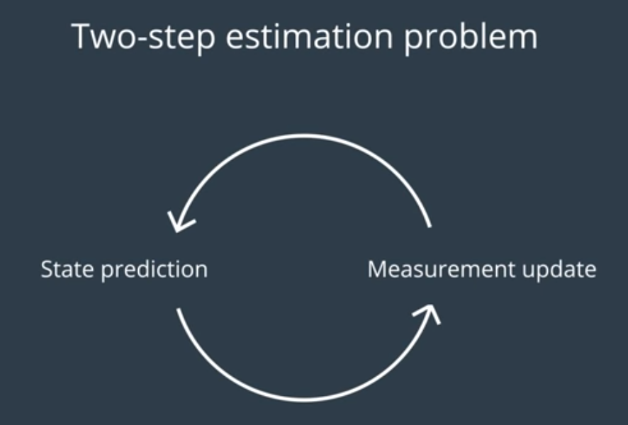
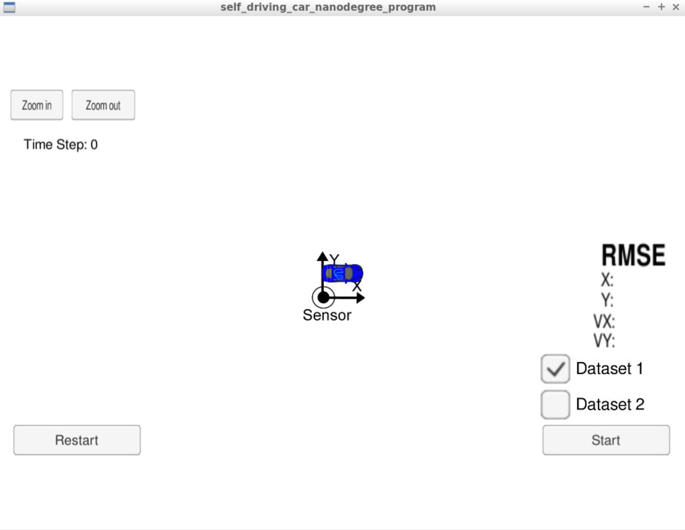
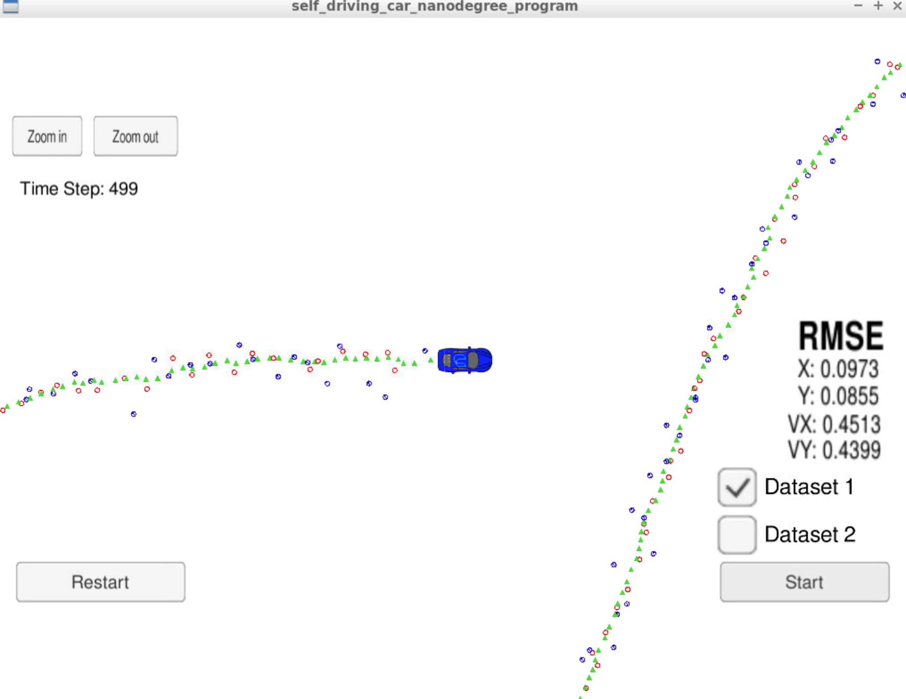
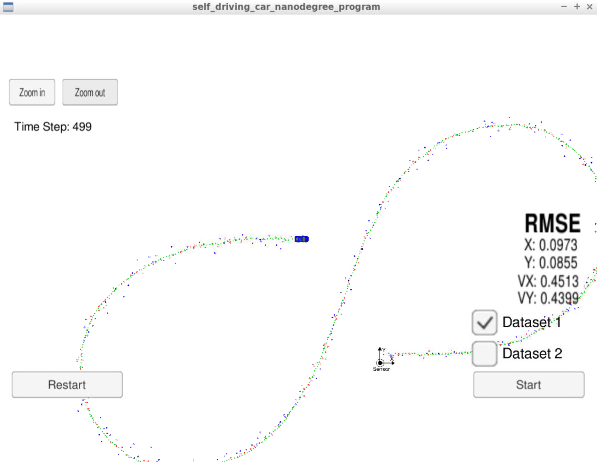

This project presents an implementation of an (extended) kalman filter to estimate the state of a moving car with noisy lidar and radar measurements. The project uses c++ to write a program able to read and analyse radar and lidar measurements to track and predict a car position through the udacity simulator.
The goals / steps of this project are the following:
Assuming we have 'cmake', 'make' and 'uWebSocketIO' already installed, open a terminal:
Clone this repository
On the main project terminal:
Make a build directory:
mkdir build && cd build
Compile:
cmake .. && make
Run it:
./ExtendedKF
Using the Udacity provided simulator, select Project 1/2 EKF and UKF in the main menu screen. Once the scene is loaded you can hit the START button to observe how the object moves and how measurement markers are positioned in the data set.
The Kalman filter is an estimation algorithm used to estimate the state of a system given noisy and uncertain measurements. In this project, measurements are acquired through radar and lidar sensors.
Kalman filter basically work in a predict/update loop: Check this site for more detail

First, we have a prior information of the object to track, we use this information to predict the state of that object until the next measurement arrives, this is the PREDICTION step. Then, we gather information from sensors (like lidar and radar) and use this information to courrect our belief about the state of the object, this correspond to the UPDATE step.
In case we have multiple sensors, each sensor will have its own predcition update scheme. For the radar and lidar sensors, the prediction step would be the same, however, the measurement update would be different since both sensor "see" the world differently.
The Extended Kalman Filter come to the scenario when the system is not linear, this is the case when working with radar measurements. It linearise the system distribution around the mean of the current state and then use this result in the prediction and update states of the Kalman Filter algorithm.
The udacity simulator shows the following initial screen:

We start the project and run the test on Dataset 1. Lidar measurements are red circles, radar measurements are blue circles with an arrow pointing in the direction of the observed angle, and the prediction are the green triangles:

Finally, I tested on Dataset 2, but also leaving out the radar on one run and then the same with lidar. Results are the following:
Dataset 1, video :
| State Values | RMSE |
|:----------------:|:---------:|
| x - position | 0.0973 |
| y - position | 0.0855 |
| x - velocity | 0.4513 |
| y - velocity | 0.4399 |
Dataset 2, video :
| State Values | RMSE |
|:----------------:|:---------:|
| x - position | 0.0726 |
| y - position | 0.0965 |
| x - velocity | 0.4216 |
| y - velocity | 0.4932 |
Dataset 1 RADAR only, video :
| State Values | RMSE |
|:----------------:|:---------:|
| x - position | 0.2302 |
| y - position | 0.3464 |
| x - velocity | 0.5835 |
| y - velocity | 0.8040 |
Dataset 1 LIDAR only, video :
| State Values | RMSE |
|:----------------:|:---------:|
| x - position | 0.1473 |
| y - position | 0.1153 |
| x - velocity | 0.6383 |
| y - velocity | 0.5346 |
From these tests, we can see:
At the end of the process and considering radar and lidar measurements during the tracking process, the kalman fuilter is able to predict the car position around the track with decent RMSE values as compared with those in the rubric!
Overall picture of testing on track 1 (including both RADAR and LIDAR measurements):

Here's a link to my video result.
Very interesting way to track the car position but also useful to track other objects. Programming in C++ could be quite challenging if this is not an every-dat programming language for someone. Final results shown how powerful is the (extended) kalman filter.
Sensor fusion is a very important feature in self driving cars, it provides very useful (and somehow 'hidden') information, and with the use of different sensors for tracking object such as lidar and radar, we have better tracking/estimation results due to system redundancy.
Thank you for reading this report.
Daniel